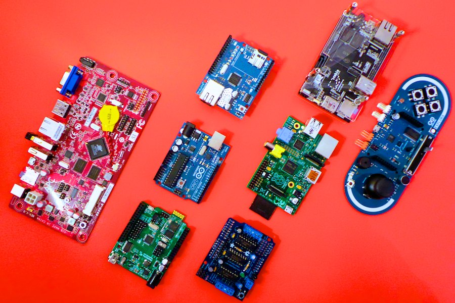

ARM Holdings
Только разработка и лицензии
RISC (vs CISC)
- Инструкции простые, их, как правило, меньше
- Фиксированный размер инструкций
- Регистры (их много, load/store)
- Простота конвееризации
Условное выполнение
- Практически все инструкции
- Важно для if...then...else
- А как же предсказание ветвлений?
Endianness
Bi-endian
- network byte order
- JPEG, TIFF, PNG...
- В x86, начиная с 486 - bswap
Thumb(2)
- Никаких условий :'(, но есть IT
- Thumb - 16 бит
- Thumb2 - 16 и 32 бита
Jazelle DBX/RCT
- Прямое выполнение Java байткода
- ...сложные или редкоиспользуемые - in software
(ARM считает что 95%)
- Jazelle RCT aka ThumbEE - не только Java!
прочее
- SIMD - NEON
- VFP (v2,v3,v3-D32,v3-D16...)
- DSP
Кто все эти буквы?
- ARM8, Cortex-A - семейство
- ARMv7, - архитектура
- ARM946E-S, Cortex-A5 - ядро
Cortex
- Application
- Realtime
- Microcontroller
Смартфоны
Все топовые смартфоны
Одноплатные компьютеры

Виртуализация
- What? PV vs HWM vs PVH
- LPAE - дополнительный слой MMU
Aarch64
- > 4GB, mmap, sparse allocation
- Cемейство Cortex-A50 (53/57)
- Backward-compatible
Cortex-A57
Довольно круто
- Связка с Mali
- Out of order
- Branch prediction (2K - 4K)
- И многое другое